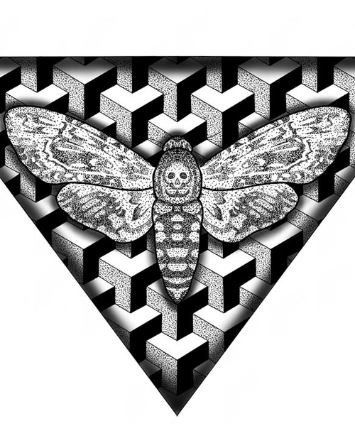

Sandra.
Artiste tatoueure formée et passionnée, Sandra a fondé Infinity Inked Tattoo avec une conviction simple : un tatouage doit être pensé, dessiné et réalisé comme une œuvre à part entière.
Installée à Soyaux depuis plusieurs années, elle travaille exclusivement sur rendez-vous, dans un cadre calme et confidentiel. Chaque projet est une collaboration — elle écoute, elle propose, elle exécute avec précision.
Son trait se définit par la rigueur des lignes, la finesse des textures, et une sensibilité organique qui traverse tous ses styles : ornemental, géométrique, floral et dotwork.
Comment Sandra travaille.
Écoute & projet
Tout commence par une consultation — en présentiel ou par message. Sandra prend le temps de comprendre votre projet, vos envies, vos contraintes. Pas de jugement, pas de rush. Votre histoire compte.
Design sur mesure
Chaque dessin est créé spécifiquement pour vous — adapté à votre morphologie, à votre peau, à la zone choisie. Sandra ne revend pas de flash. Elle dessine, vous valide, on ajuste si besoin.
Hygiène absolue
Matériel stérile, surfaces protégées, gants, aiguilles neuves à chaque séance. L'hygiène n'est pas une option — c'est la base. Votre sécurité et votre santé passent avant tout.
Entre la règle
et l'organique.
Sandra puise son inspiration dans les arts ornementaux d'Europe et d'Asie, la géométrie sacrée, la botanique illustrée, et l'architecture des manuscrits médiévaux. Ce qui l'attire ? La tension entre la règle mathématique et le vivant — des formes qui semblent être nées de la nature mais obéissent à une logique secrète.
Elle travaille principalement en noir et gris, avec des variations en blackwork et en dotwork. La couleur est possible sur demande, dans un spectre restreint et toujours au service du projet.




Note Google — 70+ avis
Clients recommandés — sans exception
Artiste — Votre tatouage, ses mains. Pas de sous-traitance.